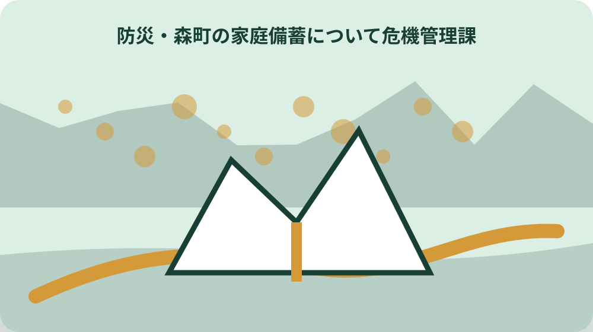
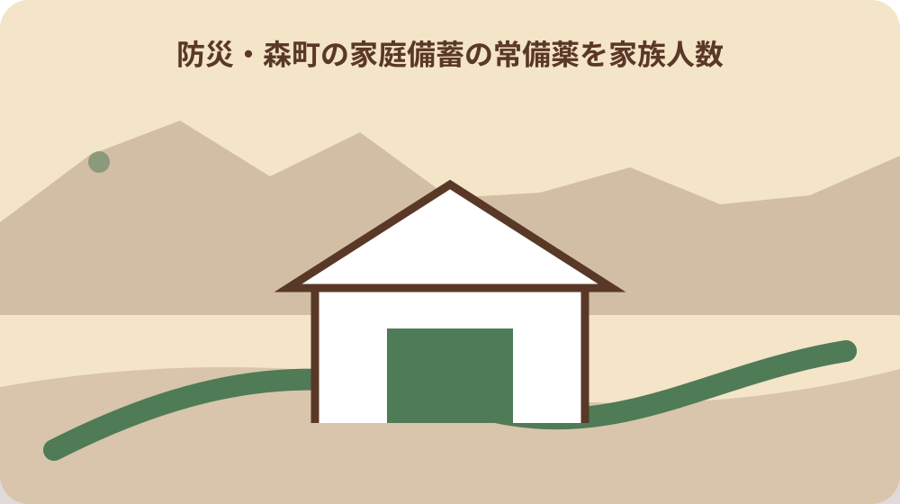

先に答えを確認する
森町の家庭備蓄で「災害に備えて何日分の水・食料・薬・衛生用品を用意し」はどう確定しますか。対象者、住所、対象日と「災害に備えて何日分の水・食料・薬・衛生用品を用意し、どう入れ替えるか知りたい」という目的を書き、「防災情報」の対象範囲と照合します。該当しない条件は未確認として残します。
森町の家庭備蓄の「どう入れ替えるか知りたい」にはいつ着手しますか。森町の家庭備蓄は初動を先延ばしにせず、安全確保後すぐ確認し、当日の案内を実行直前にも見直す。 「森町の家庭備蓄」が先に必要なら、その取得日も逆算表へ加えます。
森町の家庭備蓄の「水」はどの窓口へ聞きますか。最初の窓口候補は危機管理課の該当係です。問い合わせ時は「水」、希望日、見た公式ページ名を伝え、担当が異なる場合は正しい係を確認します。
森町の家庭備蓄の「食料」を家族へどう残しますか。「食料」の確認結果、確認日、根拠にした「防災情報」「森町防災ハザードマップ」、常備薬を家族人数から考える、未確認の森町の家庭備蓄の対象者、次に森町の家庭備蓄の実行日を確かめる担当を残します。
森町の家庭備蓄の結論：災害に備えて何日分の水・食料・薬・衛生用品を用意し、どう入れ替えるか知りたい
災害に備えて何日分の水・食料・薬・衛生用品を用意し、どう入れ替えるか知りたいなら、森町の家庭備蓄から確認します。結論を急ぐ前に、誰の、どの場所の、いつの話かを書き出すと、別の制度や別年度の案内を混ぜにくくなります。
家庭備蓄に関して、森町の家庭備蓄の公式資料から読める要点は次のとおりです。森町の家庭備蓄で判断する中心は、災害に備えて何日分の水・食料・薬・衛生用品を用意し、どう入れ替えるか知りたいという具体的な目的であり、別制度の一般案内だけでは完結しない。ただし、ページの更新日と適用日、実施日、書類の有効期間は同じとは限りません。
森町の家庭備蓄の結論：災害に備えて何日分の水・食料・薬・衛生用品を用意し、どう入れ替えるか知りたいを整理する段階では、森町の家庭備蓄を起点に平時の準備と発災時の行動を混同しない順序で進めます。分からない項目を推測で埋めず、確認先と期限を決める方が手戻りを減らせます。
森町の家庭備蓄を森町公式の「災害に備えて何日分の水・食料・薬・衛生用品を用意し」で確かめる
森町の家庭備蓄を森町公式の「災害に備えて何日分の水・食料・薬・衛生用品を用意し」で確かめるは、水・食料・常備薬を家族人数から考えるの資料を集めるだけの作業ではありません。今決められることと、現地や窓口でなければ決められないことを分ける作業です。
家庭備蓄で水・食料・常備薬を家族人数から考えるの判断材料になる公表事項は、森町公式の「防災情報」は、森町の家庭備蓄について町内で確認を始める一次情報として実在する。検索結果の短い説明ではなく、本文の対象者、場所、日付、例外まで確認し、ページ名と確認日を記録します。
森町の家庭備蓄を森町公式の「災害に備えて何日分の水・食料・薬・衛生用品を用意し」で確かめるについて森町で注意する条件は、食料と常備薬を家族人数から考えるを町公式情報の対象年度へ合わせ、前年の条件や別世帯の例をそのまま使わない。水・食料・常備薬を家族人数から考えるを家族へ伝えるときも、結論だけでなく未確認事項を添えてください。
森町の家庭備蓄ではどう入れ替えるか知りたいと森町の家庭備蓄を混同しない
ここでは、森町の家庭備蓄ではどう入れ替えるか知りたいと森町の家庭備蓄を混同しないのうち災害に備えて何日分の水・食料・薬・衛生用品を用意しを扱います。森町の防災情報と所管機関の役割を分け、同じ言葉でも担当範囲が同じかを確かめます。
家庭備蓄における災害に備えて何日分の水・食料・薬・衛生用品を用意しの確認の土台は、森町公式の「森町防災ハザードマップ」も実在し、対象・場所・関連事項を別の角度から照合できる。この内容が当てはまるとは限らないため、住所、対象者、実行日を添えて担当窓口へ照会します。
森町の家庭備蓄ではどう入れ替えるか知りたいと森町の家庭備蓄を混同しないの実行前メモには、災害に備えて何日分の水・食料・薬・衛生用品を用意しを含め、確認済み、未確認、対象外の三欄を作ります。森町の家庭備蓄の対象者と森町の家庭備蓄の実行日を一枚にまとめ、危機管理課の該当係へ相談する人と回答を家族へ戻す人を決める。保留事項にも次の担当と再確認日を付けます。
森町の家庭備蓄の水から期限を逆算する
森町の家庭備蓄の水から期限を逆算するでは、特にどう入れ替えるか知りたいを確かめます。森町の家庭備蓄は初動を先延ばしにせず、安全確保後すぐ確認し、当日の案内を実行直前にも見直す。資料の対象と自分の住所、立場、予定日が一致するかを読み、当てはまらない条件は未確認のまま残します。
家庭備蓄のうちどう入れ替えるか知りたいについて森町で実際に動く際は、森町内でも森・一宮・園田・飯田と天方・三倉では移動時間が異なる。水を行う時刻と帰路を対象住所から確認する。条件が違えば必要な資料や相談先も変わります。町全体の説明を個別の答えへ置き換えないことが大切です。
森町の家庭備蓄の水から期限を逆算するを尋ねる窓口へは、どう入れ替えるか知りたいと住所、家族構成、避難経路、連絡先を一枚にして持参します。質問は「できるか」だけで終わらせず、根拠資料、次の部署、再確認時期まで聞けば、家族へ正確に共有できます。

森町の家庭備蓄について危機管理課の該当係へ「食料」を伝える
災害に備えて何日分の水・食料・薬・衛生用品を用意し、どう入れ替えるか知りたいなら、森町の家庭備蓄の結論：災害に備えて何日分の水・食料・薬・衛生用品を用意し、どう入れ替えるか知りたいから確認します。結論を急ぐ前に、誰の、どの場所の、いつの話かを書き出すと、別の制度や別年度の案内を混ぜにくくなります。
家庭備蓄に関して、森町の家庭備蓄の結論：災害に備えて何日分の水・食料・薬・衛生用品を用意し、どう入れ替えるか知りたいの公式資料から読める要点は次のとおりです。森町での最初の窓口候補は危機管理課の該当係であり、担当外の場合は対象制度の担当係と引継ぎに必要な資料名を確認する。ただし、ページの更新日と適用日、実施日、書類の有効期間は同じとは限りません。
森町の家庭備蓄について危機管理課の該当係へ「食料」を伝えるを整理する段階では、森町の家庭備蓄の結論：災害に備えて何日分の水・食料・薬・衛生用品を用意し、どう入れ替えるか知りたいを起点に平時の準備と発災時の行動を混同しない順序で進めます。分からない項目を推測で埋めず、確認先と期限を決める方が手戻りを減らせます。
森町の家庭備蓄の常備薬を家族人数から考えるに必要な資料をそろえる
森町の家庭備蓄の常備薬を家族人数から考えるに必要な資料をそろえるは、森町の家庭備蓄を森町公式の「災害に備えて何日分の水・食料・薬・衛生用品を用意し」で確かめるの資料を集めるだけの作業ではありません。今決められることと、現地や窓口でなければ決められないことを分ける作業です。
家庭備蓄で森町の家庭備蓄を森町公式の「災害に備えて何日分の水・食料・薬・衛生用品を用意し」で確かめるの判断材料になる公表事項は、森町の家庭備蓄では「災害に備えて何日分の水・食料・薬・衛生用品を用意し」「どう入れ替えるか知りたい」「森町の家庭備蓄」を別欄で照合し、確認日と未確認事項を記録してから実行する。検索結果の短い説明ではなく、本文の対象者、場所、日付、例外まで確認し、ページ名と確認日を記録します。
森町の家庭備蓄の常備薬を家族人数から考えるに必要な資料をそろえるについて森町で注意する条件は、森町の家庭備蓄の対象者と森町の家庭備蓄の実行日を一枚にまとめ、危機管理課の該当係へ相談する人と回答を家族へ戻す人を決める。森町の家庭備蓄を森町公式の「災害に備えて何日分の水・食料・薬・衛生用品を用意し」で確かめるを家族へ伝えるときも、結論だけでなく未確認事項を添えてください。
森町の地区差から森町の家庭備蓄の森町の家庭備蓄の対象者を確認する
ここでは、森町の地区差から森町の家庭備蓄の森町の家庭備蓄の対象者を確認するのうち森町の家庭備蓄ではどう入れ替えるか知りたいと森町の家庭備蓄を混同しないを扱います。森町の防災情報と所管機関の役割を分け、同じ言葉でも担当範囲が同じかを確かめます。
家庭備蓄における森町の家庭備蓄ではどう入れ替えるか知りたいと森町の家庭備蓄を混同しないの確認の土台は、森町公式の「防災」も実在し、この記事の主題を町内の関連条件と照合する第3の確認先になる。この内容が当てはまるとは限らないため、住所、対象者、実行日を添えて担当窓口へ照会します。
森町の地区差から森町の家庭備蓄の森町の家庭備蓄の対象者を確認するの実行前メモには、森町の家庭備蓄ではどう入れ替えるか知りたいと森町の家庭備蓄を混同しないを含め、確認済み、未確認、対象外の三欄を作ります。森町内でも森・一宮・園田・飯田と天方・三倉では移動時間が異なる。水を行う時刻と帰路を対象住所から確認する。保留事項にも次の担当と再確認日を付けます。
森町の家庭備蓄の森町の家庭備蓄の実行日で起こりやすい取り違え
森町の家庭備蓄の森町の家庭備蓄の実行日で起こりやすい取り違えでは、特に森町の家庭備蓄の水から期限を逆算するを確かめます。森町の家庭備蓄で判断する中心は、災害に備えて何日分の水・食料・薬・衛生用品を用意し、どう入れ替えるか知りたいという具体的な目的であり、別制度の一般案内だけでは完結しない。資料の対象と自分の住所、立場、予定日が一致するかを読み、当てはまらない条件は未確認のまま残します。
家庭備蓄のうち森町の家庭備蓄の水から期限を逆算するについて森町で実際に動く際は、食料と常備薬を家族人数から考えるを町公式情報の対象年度へ合わせ、前年の条件や別世帯の例をそのまま使わない。条件が違えば必要な資料や相談先も変わります。町全体の説明を個別の答えへ置き換えないことが大切です。
森町の家庭備蓄の森町の家庭備蓄の実行日で起こりやすい取り違えを尋ねる窓口へは、森町の家庭備蓄の水から期限を逆算すると住所、家族構成、避難経路、連絡先を一枚にして持参します。質問は「できるか」だけで終わらせず、根拠資料、次の部署、再確認時期まで聞けば、家族へ正確に共有できます。
家族や関係者へ森町の家庭備蓄の災害に備えて何日分の水・食料・薬・衛生用品を用意しを共有する
災害に備えて何日分の水・食料・薬・衛生用品を用意し、どう入れ替えるか知りたいなら、森町の家庭備蓄について危機管理課の該当係へ「食料」を伝えるから確認します。結論を急ぐ前に、誰の、どの場所の、いつの話かを書き出すと、別の制度や別年度の案内を混ぜにくくなります。
家庭備蓄に関して、森町の家庭備蓄について危機管理課の該当係へ「食料」を伝えるの公式資料から読める要点は次のとおりです。森町公式の「防災情報」は、森町の家庭備蓄について町内で確認を始める一次情報として実在する。ただし、ページの更新日と適用日、実施日、書類の有効期間は同じとは限りません。
家族や関係者へ森町の家庭備蓄の災害に備えて何日分の水・食料・薬・衛生用品を用意しを共有するを整理する段階では、森町の家庭備蓄について危機管理課の該当係へ「食料」を伝えるを起点に平時の準備と発災時の行動を混同しない順序で進めます。分からない項目を推測で埋めず、確認先と期限を決める方が手戻りを減らせます。

森町の家庭備蓄のどう入れ替えるか知りたいを実行しない場合の代案
森町の家庭備蓄のどう入れ替えるか知りたいを実行しない場合の代案は、森町の家庭備蓄の常備薬を家族人数から考えるに必要な資料をそろえるの資料を集めるだけの作業ではありません。今決められることと、現地や窓口でなければ決められないことを分ける作業です。
家庭備蓄で森町の家庭備蓄の常備薬を家族人数から考えるに必要な資料をそろえるの判断材料になる公表事項は、森町公式の「森町防災ハザードマップ」も実在し、対象・場所・関連事項を別の角度から照合できる。検索結果の短い説明ではなく、本文の対象者、場所、日付、例外まで確認し、ページ名と確認日を記録します。
森町の家庭備蓄のどう入れ替えるか知りたいを実行しない場合の代案について森町で注意する条件は、森町内でも森・一宮・園田・飯田と天方・三倉では移動時間が異なる。水を行う時刻と帰路を対象住所から確認する。森町の家庭備蓄の常備薬を家族人数から考えるに必要な資料をそろえるを家族へ伝えるときも、結論だけでなく未確認事項を添えてください。
大石の視点：森町の家庭備蓄を暮らしと不動産の記録へつなぐ
ここでは、大石の視点：森町の家庭備蓄を暮らしと不動産の記録へつなぐのうち森町の地区差から森町の家庭備蓄の森町の家庭備蓄の対象者を確認するを扱います。森町の防災情報と所管機関の役割を分け、同じ言葉でも担当範囲が同じかを確かめます。
家庭備蓄における森町の地区差から森町の家庭備蓄の森町の家庭備蓄の対象者を確認するの確認の土台は、森町の家庭備蓄は初動を先延ばしにせず、安全確保後すぐ確認し、当日の案内を実行直前にも見直す。この内容が当てはまるとは限らないため、住所、対象者、実行日を添えて担当窓口へ照会します。
大石の視点：森町の家庭備蓄を暮らしと不動産の記録へつなぐの実行前メモには、森町の地区差から森町の家庭備蓄の森町の家庭備蓄の対象者を確認するを含め、確認済み、未確認、対象外の三欄を作ります。食料と常備薬を家族人数から考えるを町公式情報の対象年度へ合わせ、前年の条件や別世帯の例をそのまま使わない。保留事項にも次の担当と再確認日を付けます。
森町の家庭備蓄の最終チェックと次の一歩
森町の家庭備蓄の最終チェックと次の一歩では、特に森町の家庭備蓄の森町の家庭備蓄の実行日で起こりやすい取り違えを確かめます。森町での最初の窓口候補は危機管理課の該当係であり、担当外の場合は対象制度の担当係と引継ぎに必要な資料名を確認する。資料の対象と自分の住所、立場、予定日が一致するかを読み、当てはまらない条件は未確認のまま残します。
家庭備蓄のうち森町の家庭備蓄の森町の家庭備蓄の実行日で起こりやすい取り違えについて森町で実際に動く際は、森町の家庭備蓄の対象者と森町の家庭備蓄の実行日を一枚にまとめ、危機管理課の該当係へ相談する人と回答を家族へ戻す人を決める。条件が違えば必要な資料や相談先も変わります。町全体の説明を個別の答えへ置き換えないことが大切です。
森町の家庭備蓄の最終チェックと次の一歩を尋ねる窓口へは、森町の家庭備蓄の森町の家庭備蓄の実行日で起こりやすい取り違えと住所、家族構成、避難経路、連絡先を一枚にして持参します。質問は「できるか」だけで終わらせず、根拠資料、次の部署、再確認時期まで聞けば、家族へ正確に共有できます。
大石の視点と次の一歩
森町の家庭備蓄｜水・食料・常備薬を家族人数から考えるについて、私は結論を急ぐより、分かっている事実と未確認事項を分けることを優先します。特に森町の家庭備蓄を先に確かめ、申請や契約を最初の行動にしない方が選択肢を守れます。
家庭備蓄では、森町内の地区による移動、道路、周辺施設、土地の使われ方の違いも確認します。現地を見ていない内容を体験談のように語らず、住所、家族構成、避難経路、連絡先を公式資料と照合してください。
家庭備蓄について今日できることは、水・食料・常備薬を家族人数から考えるに関係する一次情報を一件開き、自分に当てはまる条件へ印を付けることです。資料名、部署名、確認日、残った疑問を記録します。
家庭備蓄のうち災害に備えて何日分の水・食料・薬・衛生用品を用意しが対象外なら、その理由も記録します。対象外と未確認を分けておけば、条件が変わったときに必要な箇所だけ確認し直せます。